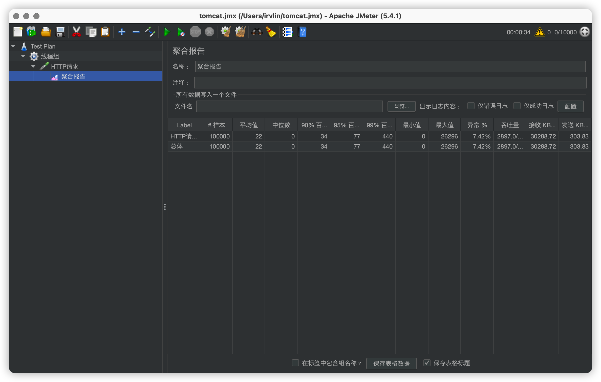
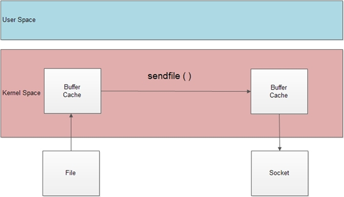

全栈性能调优
MySQL
优化层面
MySQL数据库优化层面：
- 商业需求：不合理需求造成资源投入产出比过低；无用功能堆积使得系统过度复杂影响整体性能。
- 系统架构：数据库中存放的数据是否都合适在数据库中存放？是否合理利用了应用层
Cache机制？数据层实现是否是最精简的？ SQL及索引优化：根据需求写出良好的SQL语句，创建有效的索引，了解SQL优化；优化的目的是减少中间结果集，降低物理IO。- 数据库表结构优化：根据数据库的范式，设计表结构；适当将表进行拆分，原本需要
join查询只需要单表查询即可。 - 系统配置优化：大多运行在
Linux系统上，如tcp连接数限制、打开文件数限制、安全性的限制。 - 硬件配置优化：数据库主机的
IO性能是最需要优先考虑的因素；数据库主机和普通的应用程序服务器相比，资源要相对集中很多，单台主机所需要进行的计算量也大很多，所以数据库主机的CPU处理能力也是一个重要的因素。同时数据库主机的网络设备的性能也会成为系统的瓶颈。
SQL 慢查询
首先我们要对对有问题的SQL进行筛选。
查看是否开启了慢查询：SHOW VARIABLES LIKE '%slow_query_log%;'。slow_query_log_file为慢查询日志的位置。慢查询标准为10s，可以通过SHOW VARIABLES LIKE '%long_query%';查看。
开启慢查询：SET GLOBAL slow_query_log=ON;。模拟慢查询：SELECT SLEEP(12)。查看日志：
1 | # Time: 2021-02-23T13:50:29.748865Z |
来看一个实际情况。
我们可以设置自定义慢查询时间：SET GLOBAL long_query_time=1;。
创建一个数据库以及数据表。再写一个存储过程创建100000条数据，类似下面这样：
1 | drop PROCEDURE if EXISTS test; |
执行UPDATE test SET name=testtest;
1 | # Time: 2021-02-23T15:02:12.010783Z |
查询的时间是1.136371s，锁定时间仅为0.000260s，一共检测了100000条数据，发送0条数据。
在实际生产环境中，可能会产生大量的慢查询日志。这时我们可以通过对日志的分析生成报表，通过报表进行优化。
mysqldumpslow
mysqldumpslow是mysql自带的用来分析慢查询的工具。主要有以下参数：
1 | Usage: mysqldumpslow [ OPTS... ] [ LOGS... ] |
命令行输入mysqldumpslow --verbose 日志路径可以看到类似的输出：
1 | Reading mysql slow query log from /var/lib/mysql/11e359f0dd39-slow.log |
默认按照执行时间排序。
mysqldumpslow使用很方便，但是提供的信息较少，比如CPU、IO等信息都没有。
pt-query-digest
pt-query-digest是用于分析慢查询的一个第三方工具。
pt-summary可以获得服务器相关的数据，包括CPU、网卡、内存、硬盘等信息。
pt-diskstats输出的是磁盘的IO数据。
pt-mysql-summary可以输出数据库的相关数据。
pt-query-digest
执行pt-query-digest XXX.log会有和下面类似的输出：
1 | # 140ms user time, 20ms system time, 25.94M rss, 220.49M vsz |
以上输出分为两部分，前面是总的执行数据，后面是具体每一次的数据。如果要全部显示可以添加参数--limit=100%。
pt-index-usage
pt-index-usage用于分析索引的使用情况。
pt-duplicate-key-checker
pt-duplicate-key-checker用于检查重复索引。
pt-ioprofile
pt-ioprofile用于观察特定进程的IO信息，其原理是对某个PID加一个strace进程进行IO分析。
pt-config-diff
pt-config-diff用于比较两个配置文件的差异。
pt-find
pt-find用于查找表和执行命令。例如pt-find --user=root --password=123 --tablesize +1M可以找出数据库中大于1M的表。
pt-kill
pt-kill可以杀死符合标准的mysql进程。例如pt-kill --user=root --password=123 --busy-time 3 --kill可以杀死大于3秒的查询。
pt-show-grants
pt-show-grants用于查看mysql授权（集群常用，授权复制）。
pt-table-checksum
pt-table-checksum用于验证数据库复制的完整性（集群常用，主从复制后检验）。
小结
三大类有问题的SQL语句：
- 查询次数多且每次查询耗时长的
sql。通过pt-query-digest命令可以查看。 IO大的sql。检测的数据量越大，IO量也就越大。- 未命中索引的
sql。如果Rows examine与Rows Sent数量差距过大，说明该sql索引的命中率不高，应该调整索引。
explain 分析 SQL 执行计划
前面我们通过慢查询找出了有问题的sql，现在我们可以使用explain分析sql的执行效率。
在sql语句前面加上explain即可，例如：EXPLAIN SELECT * FROM test。
1 | *************************** 1. row *************************** |
id：数字越大越先执行，如果数字一样大，就从上往下依次执行。如果该列为null表示这是一个结果集，不需要使用它进行查询。select_type：SIMPLE：表示没有UNION操作或者不包含子查询的简单SELECT查询。有连接查询时，最外层的查询为SIMPLE。PRIMARY：需要UNION操作或者包含子查询的SELECT查询，位于最外层的查询为PRIMARY。UNION：UNION连接的两个SELECT查询，第一个查询是DERVIED派生表，除了第一个表外，第二个以后的表都是UNION。UNION RESULT：包含UNION的结果集，在UNION和UNION ALL语句中，因为不需要参与查询，所以id为null。DEPENDENT RESULT：和UNION一样，出现在UNION和UNION ALL语句中，但是这个查询受到外部查询的影响。SUBQUERY：除了FROM中包含的子查询外，其他地方出现的子查询都可能是SUBQUERY。DEPENDENT SUBQUERY：表示这个SUBQUERY的查询受到外部表查询的影响。DERIVED：FROM中出现的子查询，也叫做派生表。MATERIALIZATION：物化通过将子查询结果作为一个临时表来加快查询执行的速度，正常来说是常驻内存，下次查询会再次引用临时表。
table：显示查询的表名，如果查询使用了别名，这里显示的是别名；如果不涉及对数据表的操作，显示null；如果显示的是尖括号<derived N>就表示这个是临时表，N是执行计划中的id，表示结果来自于这个查询产生。type：SYSTEM：表中只有一行数据或者是空表，且只能用于myisam和memory表，如果是InnoDB表，显示的是ALL或INDEX。CONST：使用唯一索引或主键，返回的记录一定是1行的等值WHERE条件时，type为CONST。EQ_REF：出现在连接多表的查询计划中，驱动表循环获取数据，这行数据是第二个表的主键或者唯一索引，作为条件查询只能返回一条数据，且必须为null。唯一索引和主键是多列时，只有所有的列都用作比较时才会出现eq_ref。REF：不要求连接顺序，也没有主键和唯一索引的要求，只要使用相等条件检索时就可能出现。FULLTEXT：全文索引检索。全文索引的优先级高，如果全文索引和普通索引同时存在，MySQL会优先使用全文索引。REF_OR_NULL：和ref类似，只是增加了null值的比较，实际用的不多。UNIQUE_SUBQUERY：用于WHERE中的IN子查询，子查询返回不重复唯一值。INDEX_SUBQUERY：用于IN子查询使用到了辅助索引或者IN常数列表，子查询可能返回重复值，可以使用索引将子查询去重。RANGE：索引返回扫描，常见于使用>, <, is null, between, in, like等运算符的查询中。INDEX_MERGE：表示查询使用了两个以上的索引，最后取交集或并集，常见AND、OR的条件使用了不同的索引。INDEX：索引全表扫描。把索引从头到尾扫描一遍，常见于使用索引列就可以处理不需要读取数据文件的查询，可以使用索引排序或分组的查询。ALL：扫描全表，然后在server层进行过滤返回符合要求的记录。
以上几种
type的效率由高到低，也就是说ALL的性能是最差的。一般达到RANGE的语句性能是比较好的。possible_keys：查询可能使用到的索引。key：查询实际使用到的索引。key_len：用于处理查询的索引长度，如果是单列索引，那就是整个索引的长度；如果是多列索引，那么查询不一定都能使用到所有的列，具体使用了哪些列就会计算进去。另外，key_len只计算WHERE条件用到的索引长度。ref：如果使用的常数等值查询，会显示CONST，如果是连接查询，被驱动表的执行计划会显示驱动表的关联字段；如果是条件使用了表达式或函数，或者条件列发生了内部隐式转换，这里可能显示为FUNC。rows：估算的扫描行数。extra：No tables used：不带FROM的查询或者FROM dual查询。NULL：查询的列没有被索引覆盖，并且WHERE筛选条件是索引的前导列。意味着使用了索引，带式部分字段未被索引覆盖。Using index：查询时直接通过索引就可以获取数据。Using where：查询的列没有被索引覆盖，WHERE筛选条件非索引的前导列。Using where; Using index：查询的列被索引覆盖，并且WHERE筛选条件是索引列之一但不是索引的前导列。Using index condition：查询的列不完全被索引覆盖，WHERE条件是一个前导列的范围。Using temporary：使用临时表存储中间结果。Using filesort：对结果使用一个外部索引排序。Using intersect：使用AND的各个索引的条件时，该信息表示从处理结果中获取交集。Using union：使用OR连接各个使用索引的条件时，该信息表示从处理结果中获取并集。Using sort_union、Using_sort_intersection：用AND和OR查询信息量大时，先查询主键，然后进行排序合并后返回结果。
慢查询优化思路
- 优化更需要优化的
sql，比如那些高并发的sql。 - 定位优化对象的性能瓶颈。
- 明确的优化目标。
- 从执行计划入手。
- 永远用小结果集驱动大结果集。
- 尽可能在索引中完成排序。
- 只取出自己需要的列，不要用
SELECT *。 - 仅使用最有效的过滤条件。
- 尽可能避免复杂的
JOIN和子查询。 - 小心使用
ORDER BY、GROUP BY、DISTINCT，尽量使用索引。 - 合理设计并使用索引。
join 语句优化
mysql关联查询使用的算法是Nested-Loop Join，通过驱动表的结果集作为循环的基础数据，然后一条一条地通过该结果集中的数据作为过滤条件到下一个表中查询数据，最后合并结果。所以我们要尽量减少Nested-Loop的次数。
Nested-Loop Join有三种变种：
Simple Nested-Loop Join：简单嵌套循环连接，非常暴力，效率差。Index Nested-Loop Join：索引嵌套循环连接。当被驱动表JOIN的列有索引时，可以减少被驱动表的匹配次数，提升性能。但如果索引是辅助索引且返回的数据还包含其他数据，则会回表查询数据，增加了一些IO。Block Nested-Loop Join：块嵌套循环连接。是对简单嵌套循环连接的优化，相当于加了一块缓冲区，把参与查询的列缓存到缓冲区中，然后拿缓冲区中的数据批量与被驱动表的数据进行匹配，减少了被驱动表循环的次数。缓冲区默认的大小是256K。
综上，对于JOIN语句的优化思路有以下几个：
- 尽可能减少
Nested-Loop的次数。 - 优先优化
Nested-Loop的内层循环。 - 保证
JOIN语句中被驱动表的JOIN字段已加索引。 - 如果无法加索引就使用块嵌套循环连接，减少内层循环次数。
- 并发量大时，尽量不使用
JOIN，JOIN语句锁定的资源过多，会阻塞其他线程。 - 复杂的
QUERY语句可以拆分成多个简单的QUERY语句分步执行。
order by 语句优化
ORDER BY排序可以使用索引进行优化，只要是索引的前导列都可以使索引生效，这样就不需要在额外的内存或文件中排序。- 对于不能利用索引避免排序的
SQL语句，数据库有自己的排序功能满足需求，这时执行计划是Using filesort。MySQL有一个参数sort_buffer_size，默认值为256K，如果要排序的数据小于这个值，就可以在缓冲区中排序，否则就要使用额外的内存或文件了。 - 分别在查询字段、
WHERE条件、排序字段上做出各种可能的组合，主要就是看有没有索引，索引在以上三个关注点上的生效情况。
group by 语句优化
GROUP BY语句本质上也进行了排序操作（mysql 8优化了，默认不进行排序）。
GROUP BY一共有三种类型：
Loose Index Scan：先执行GROUP BY，再执行WHERE条件。仅读取GROUP BY条件中有的索引键，再根据WHERE条件进行筛选。Tight Index Scan：先执行WHERE条件，再执行GROUP BY。读取所有满足条件的索引键，然后再根据读取的数据完成GROUP BY操作。Using temporary：当MySQL找不到索引完成GROUP BY操作时，会使用临时表来完成。效率低下。
distinct 语句优化
DISTINCT和GROUP BY的操作很相似，就是分组后在每组只取出一条记录，达到去重的目的。
索引种类
B-Tree索引，使用最频繁。Hash索引，效率高。Fulltext索引，目前只有char、varchar、text类型可以。R-Tree索引，比较少见，主要用于空间数据检索。
判断是否需要创建索引
- 较频繁的作为查询条件的字段应该创建索引。
- 唯一性太差的字段不应单独创建索引，可以作为复合索引。
- 更新频繁的字段不应创建索引。
- 不会在
WHERE子句中出现的字段不应创建索引。
索引失效
- 复合索引尽量全匹配
- 最左匹配原则（带头索引不能死，中间索引不能断）
- 不要在索引上做任何操作，比如计算、函数等等。
- 不使用范围条件。
- 只查询需要查询的列。减少
SELECT *。 - 使用
!=、<、>、IS NULL、IS NOT NULL判断时会导致索引失效。 - 索引字段使用
LIKE以通配符开头匹配时，会导致索引失效。 - 索引字段是字符串，但查询时不加单引号，会导致索引失效。
- 索引字段使用
OR时，会导致索引失效。
数据量大时的优化思路
- 当数据量大时，比如已经达到了百万级别，应该放弃在
MySQL中做JOIN操作，那样会锁住大量资源。建议根据索引单表取出数据，然后在程序里进行逻辑处理。 - 使用
nosql，例如redis进行缓存数据，减轻MySQL的压力。
其他优化原则
- 不在数据库做运算。
- 控制列的数量。
- 平衡范式和冗余。
- 拒绝大
SQL、事务、批量。 - 用合适的字段节约空间。
- 避免使用
NULL字段。 - 少用
text类型。 - 分页
LIMIT优化（偏移量越大，执行越慢）。
数据库结构优化
- 表范式化原则。一般情况下设计表要符合三大范式。
- 反范式化原则。当数据量大或者并发高的时候，可以适当给数据表添加一些冗余字段，减少数据库的
JOIN等操作。 - 垂直拆分原则。不常用的字段单独放到一个表中。大字段单独放到一个表中。经常使用的字段放到一起。
- 水平拆分原则。水平拆分是为了解决单表的数据量过大的问题。通常是对
id列进行hash运算，如果要分成5个表就对5取模。
Tomcat
Tomcat是经常使用的Servlet容器之一，很多线上产品都使用Tomcat充当服务器，所以Tomcat的优化也尤为重要。
首先进入Tomcat conf目录下的tomcat-users.xml文件，添加配置：
1 | <role rolename="manager"/> |
启动Tomcat，访问localhost:8080/manager/status输入上面配置的用户名和密码，就可以看到页面了。里面包含JVM、线程、以及服务器的一些状态。
执行器（线程池）
- 每个请求都是一个线程，我们可以打开线程池提高性能。在
conf目录中的server.xml文件中，去掉注释：
1 | <Executor name="tomcatThreadPool" namePrefix="catalina-exec-" |
然后将之前的Connector注释掉，打开带线程池的Connector。
1 | <!-- |
重启Tomcat访问localhost:8080/manager/status：

可以看到当前线程数是我们设置的minSpareThreads。
运行模式
BIO：Tomcat 7之前的默认的阻塞模式，性能低下，之后的版本已经抛弃了这种模式。NIO：同步非阻塞模式，Tomcat内部实现了reactor线程模型，性能较高。NIO2：纯异步模式，Tomcat内部实现了preactor线程模型。APR：从操作系统层面解决了异步IO问题，大幅提升性能。
BIO、NIO
我们使用Tomcat 7测试BIO运行模式。
启动Tomcat 7，访问localhost:8080/manager/status可以看到默认是BIO模型。使用jmeter进行压测，一秒内发送给localhost:8080根路径10000个请求，循环10次。



可以看到吞吐量大概是2900左右。
然后我们再使用Tomcat 9进行压测。
使用NIO的吞吐量达到了7500。
NIO2
在server.xml中修改配置：
1 | <Connector port="8080" protocol="org.apache.coyote.http11.Http11Nio2Protocol" |
线程
main 线程
main线程是Tomcat主要线程，主要作用是通过启动包来对容器进行点火。main的作用是把容器组件拉起来，然后阻塞在8005端口，等待关闭。
startStop 线程
Tomcat 9中已经没有startStop线程了。Tomcat按照层级进行异步启动，对于每一层级的组件都是采用startStop线程进行启动。- 当组件启动完成后，该线程就退出了，生命周期仅限于此。
AsyncFileHandlerWriter 线程
专门用于处理日志的线程。
ContainerBackgroundProcessor 线程
Tomcat 9中已经没有ContainerBackgroundProcessor线程了。- 主要负责实时扫描
Tomcat容器的变化，在一些时刻触发某些事件，例如在热部署开启时reload工程等。
Catalina-Utility 线程
- 将
Tomcat 8中的startStop线程和ContainerBackgroundProcessor线程合并了。
Acceptor 线程
Tomcat前端最外层的线程，负责统一接受socket请求。Acceptor处理完之后的连接线程在BIO和NIO模式中略有差异。BIO模式下，Acceptor直接把任务丢给工作线程处理，所以会阻塞；而NIO模式下，Acceptor线程会把任务交给poller线程，poller线程调用底层的epoll()进行轮询，把准备就绪的事件丢给工作线程进行处理，所以是非阻塞的。
ClientPoller 线程
NIO模式特有的线程，reactor模式的实现者。- 具体负责接收
acceptor线程交接过来的事件，对事件轮询后交给工作线程处理。
Exec 线程
Tomcat的主要工作线程，默认开启10个，接收poller线程丢过来的事件。- 主要工作是
HTTP协议解析，攒出request和response，然后调用后端的容器。
BlockPoller 线程
- 负责
Servlet的输入和输出。
AsyncTimeout 线程
- 主要检测异步
request请求时，触发超时，并将该请求再转发到工作线程池处理。
NIO 总体流程
NIO前端框架主要由三个不同的线程依次分工协作：
Acceptor线程将SocketChannel取出，传给Poller线程（会产生阻塞，所以包装成PollEvent加入缓存队列）。Poller线程轮询从通道中拿到感兴趣的事件，然后把感兴趣的key和attachment传递给Exec线程处理。Exec线程调用http11ConnectionHandler解析HTTP协议，将解析出来的内容包装成request和response，传递给CoyoteAdapter，最终执行到业务中。- 执行完业务后需要进行
Servlet回写。第一次使用的是NioSelectorPool内部的sharedSelector，执行的是非阻塞写，如果没有写成功，则会使用NioBlockingSelector的BlockPoller重新进行阻塞写。

BIO 总体流程
相比于NIO，BIO的Connector少了很重要的Poller线程，使得工作效率低下。
BIO流程和NIO大致一样，整体使用ServerSocket进行通信，一个请求一个线程。但由于缺少了Selector和轮询，导致效率低下，Tomcat在8.5版本后抛弃了BIO通道。

NIO2 总体流程
NIO2相比于NIO，少了Poller线程，多了completionHandler，实现了真正的异步操作，不用再轮询，而是给操作系统一个回调方法，操作系统准备好数据会主动将数据拷贝至用户空间，调用方法执行业务逻辑。

Tomcat 各通道的 sendfile 支持
sendfile是linux系统的一项优化技术，发送文件和网络通信时，减少用户空间和磁盘之间数据的交换，直接在内核空间做数据拷贝。这项技术是linux 2.4之后就有的了。
sendfile实际是作用于数据拷贝在两个文件描述符之间的操作函数。这个拷贝的操作是在内核中完成的，所以也叫做零拷贝。sendfile比read和write要高效得多，因为read和write要把数据拷贝到用户空间进行操作，相当于：

而sendfile不会经过用户态：

在Tomcat中，也用到了零拷贝的技术。对于BIO，Tomcat是不支持sendfile的。而对于NIO和APR，默认都是使用sendfile的，可以通过Connector的一个属性useSendFile设置。但是对于这两种模式，sendfile的实现略有不同：
- 对于
NIO，sendfile分为三个阶段：- 对
request的sendfile属性进行设置，证明该请求是sendfile请求。 servlet处理完之后，对应的response就要回写了。在response准备阶段，会初始化SendFileData这个数据结构。- 我们记得
NIO的Acceptor、Poller、Exec线程是相互配合的，当工作线程完成任务后，返回给客户端，依然要通过Poller线程，也就是会重新注册KeyEvent，读取KeyAttachment，此时若为sendfile，前面初始化的SendFileData就会注册在KeyAttachment上，Poller线程取出SendFileData中的file，通过FileChannel的transferTo方法，调用底层的零拷贝。
- 对
- 对于
APR，则进一步优化了sendfile。NIO的sendfile，实际上是通过每个Poller线程中的FileChannel的transferTo方法实现的，而这个方法是阻塞的。我们知道Poller线程实际是很珍贵的，不应该为了sendfile服务就阻塞住。所以APR为sendfile单独开辟了一个线程，这样的话Poller线程就不会阻塞了。
压缩属性
网络带宽是很珍贵的资源，所以对传输的数据进行压缩是很有必要的。
HTTP响应头中压缩相关的属性有：
- 传输内容编码：
Content-Encoding，内容编码，即整个数据信息在服务端经过怎样的编码处理，然后客户端以怎样的编码来解码得到原始数据。这里的内容编码主要是指压缩编码，也就是服务端压缩，客户端解压。主要有gzip、compress、deflate、identity。通常压缩格式是gzip。 - 传输数据编码：
Transfer-Encoding，表示数据在网络传输中，使用什么方式来保证数据是安全成功地传输处理。可以是分段传输，也可以不分段，直接使用原数据进行传输。有效值可以是chunked和identity。 - 传输内容格式：
Content-Type，即接收到的数据最终是以什么形式显示在浏览器上。可以是图片、文本或是html等等。
Tomcat中压缩的实现具体有三个步骤：
Http11Processor.prepareResponse()：用于检查是否配置了压缩属性。- 如果配置了压缩属性，则
GzipOutputFilter生效。 GzipOutputFilter会加入GzipOutputStream，压缩就是由他来完成。
在Tomcat中，我们可以通过设置Connector属性来实现压缩。
1 | <Connector port="8080" protocol="HTTP/1.1" |
我们必须同时设置useSendfile和compresion，并且互斥。这是因为我们必须要在用户空间中对文件进行压缩，而sendfile正好不会经过用户空间，所以两者是矛盾的。
deferAccept 参数优化
我们知道客户端与服务器进行通信首先要经过三次握手，大致流程如下：

首先客户端发出一个SYN包，告诉服务端我要尝试进行连接。如果服务端存在，会基于这个SYN包，回复一个SYN+ACK包，告诉客户端我存在，允许连接。然后客户端回复ACK，告诉服务端我准备发送数据了。接下来进入数据传输的第二个阶段了。
我们关注红色标记的部分。服务端知道客户端要发送数据了，就会通过内核的协调，唤醒一个数据接收进程，这个Acceptor进程会绑定一个IO句柄用于接收。但实际上，在服务端的ESTABLISHED建立后，离数据的传输可能还有一段时间，比如客户端的程序阻塞了，加上网络延时，那这个时间差就会很大。这样的话，服务端相当于一直在白白消耗资源。
对于这个问题，服务端提供了一种机制，使得服务端对于最后一个ACK视而不见，等到客户端真正把数据传输过来了，才去开启Acceptor进程。这个优化，就是TCP_DEFER_ACCEPT属性。这个属性只在APR通道有效，默认开启。
keep-alive
在早期的HTTP协议中，每开启一个HTTP连接都要开启一个TCP连接。这样极其浪费资源，且效率低下。HTTP1.1之后使用keep-alive机制改善了这种情况，一次TCP连接就可以多次传输数据而不会断开连接。
在服务器中，一般和keep-alive相关的有两个参数：
keepAliveTimeout：此时间过后的连接就closed了。单位是ms。maxKeepAliveRequests：最大长连接的个数（1表示禁用，-1表示不限制个数，默认为100个，一般设置在100 - 200之间）
在Tomcat中，HTTP1.1之后是默认开启keep-alive的。
JVM
JVM 运行参数
- 标准参数：
-help、-version -X参数（非标准参数）：-Xint、-Xcomp-XX参数（使用率高）：-XX:newSize、-XX:+UseSerialGC
内存模型

jstat
jstat是JDK自带的轻量级工具，可以对Java进程的资源和性能进行监控，包括堆内存、GC情况等等信息。
jstat主要有以下几个options：
1 | -class |
jstat -class <pid>：用于查看当前进程的类加载信息。
1 | 已加载数量 占用空间 未加载数量 占用空间 时间 |
jstat -compiler <pid>：查看编译的信息。
1 | 已编译数量 失败数量 无效数量 时间 失败类型 失败方法 |
jstat -gc <pid>：查看GC情况。
1 | S0大小 S1大小 S0已使用 S1已使用 Eden区大小 Eden区已使用 Old区大小 Old区已使用 方法区大小 方法区已使用 |
jmap
jmap可以查出某个Java进程（使用pid）内存内的，所有对象的情况。
jmap -heap <pid>：查看内存的使用情况。JDK 1.8之后需要使用jhsdb jmap --heap --pid <pid>命令。
1 | using thread-local object allocation. |
jmap -histo <pid>：查看内存中对象数量及大小。jmap -dump:format=b,file=filename <pid>：将内存的使用情况以二进制的形式dump到文件中。jhat -port 8888 filename：上个命令dump出来的是二进制文件，不方便查看，所以我们可以使用jhat命令进行查看。
MAT
MAT(Memory Analyzer Tool)是一款基于Eclipse的内存分析工具，是一款快速、功能丰富的Java heap分析工具，可以帮助我们查找内存泄漏，减少内存消耗。
首先，模拟堆内存溢出的情况：
1 | public class Test { |
设置VM参数：-Xmx32M -Xms32M -XX:+HeapDumpOnOutOfMemoryError -XX:HeapDumpPath=./，意思是最大堆内存为32M，然后将错误信息dump到当前项目的根目录下。运行一段时间就可以看到错误信息：
1 | java.lang.OutOfMemoryError: Java heap space |
打开MAT，导入hprof文件，点击Leak Suspects，可以看到和下面类似的图：

主线程持有的变量大小已经占了内存的98.02%，所以报了堆内存溢出的异常。
jstack
jstack是JVM自带的一款堆栈跟踪工具。
模拟死锁的发生：
1 | public class Test { |
运行发现已经发生了死锁。
运行jstack <pid>命令：
1 | Found one Java-level deadlock: |
jstack已经帮我们显示了死锁的具体信息。
jvisualvm
使用jvisualvm可以监控线程、内存情况，查看方法的CPU时间和内存中的对象，已被GC的对象，反向查看分配的堆栈。
jvisualvm使用简单，几乎0配置，功能丰富，几乎囊括了其他JDK自带命令的所有功能。
垃圾回收机制
引用计数法
假设有一个对象A，任何一个对象对A的引用，那么对象A的引用计数器+1；引用失败时，计数器-1。如果计数器的值为0，说明对象A没有引用了，即可以被回收。
引用计数法不能解决循环引用的问题。
标记清除算法
标记清除算法将垃圾回收分为两阶段：标记和清除。
- 标记：从根节点开始标记引用的对象。
- 清除：未被标记的对象就是垃圾对象，可以被清除。
标记清除算法解决了循环引用的问题，但是效率较低，因为标记和清除都要遍历所有对象，在GC的时候要停止应用程序，对于交互性要求高的应用来说这个体验很差。同时，通过标记清除算法清理后的内存，碎片化严重，因为被回收的对象可能存在于内存的各个角落，是不连贯的。
标记压缩算法
标记压缩算法（也叫标记整理算法）在标记清除算法的基础上，将清理后的存活的对象压缩到一起，解决了内存碎片化的问题，大大提升了内存空间的利用率。
复制算法
复制算法将内存空间一分为二，每次只对外提供内存空间的一半，当内存快满时，触发GC，将存活的对象全部复制到内存的另一半，并且清除自己的内存。然后将两块内存空间互换角色。重复几次之后，会把存活的对象放到老年代中 。
复制算法在垃圾对象多的情况下，效率较高，因为需要复制的对象较少。但是由于每次只提供一半的内存，内存的使用率是很低的。
分代算法
根据回收对象的特点进行选择，在JVM中，年轻代适合复制算法，老年代适合标记清除或者标记压缩算法。
垃圾收集器以及内存分配
串行垃圾收集器
串行垃圾收集器（Serial）是最基本的、历史最悠久的收集器。它是单线程的，对于限定单个CPU的环境来说，Serial收集器没有线程交互的开销，所以可以专心做垃圾回收以获得最高的效率。Serial收集器在回收垃圾时，必须暂停其他工作线程直至回收结束（stop the world）。
模拟堆内存溢出：
1 | public static void main(String[] args) { |
添加VM参数：-XX:+UseSerialGC -Xmx8m -Xms8m -XX:+PrintGCDetails -XX:+PrintCommandLineFlags，使用串行垃圾收集器，堆内存设置为8M。
1 | -XX:InitialHeapSize=8388608 -XX:MaxHeapSize=8388608 -XX:+PrintCommandLineFlags -XX:+PrintGCDetails -XX:+UseCompressedClassPointers -XX:+UseCompressedOops -XX:+UseSerialGC |
当我们配置-XX:+UseSerialGC时，实际上是在年轻代中使用了串行收集器以及复制算法；而老年代中虚拟机会自动帮我们使用Serial Old收集器，使用的是标记压缩算法。
ParNew 垃圾收集器
ParNew并行垃圾收集器在串行的基础上做了改进，将单线程改为了多线程进行垃圾回收，这样可以缩短垃圾回收的时间，提高效率。
通过-XX:+UseParNewGC可以设置年轻代使用ParNew回收器，而老年代使用的依然是串行回收器；通过-XX:+ParallelGCThreads可以限制GC线程数量，默认开启和CPU数目相等的线程数。
Parallel 垃圾收集器
Parallel垃圾收集器在年轻代和老年代都使用并行收集器。
通过-XX:+UseParallelGC就可以激活年轻代使用Parallel收集器，同时老年代的-XX:+UseParallelOldGC也会被自动激活，反过来也同理。
CMS 垃圾收集器
CMS(Concurrent Mark Sweep)是一款并发的、使用标记清除算法的垃圾收集器，该收集器针对老年代，通过参数-XX:+UseConcMarkSweepGC进行设置。激活后，JVM将会自动使用ParNew收集器在年轻代进行回收。
CMS垃圾收集器进行垃圾回收时分为七个步骤：
- 初始标记，会导致
STW。 - 并发标记，与用户线程同时运行。
- 预清理，与用户线程同时运行。
- 可被终止的预清理，与用户线程同时运行。
- 重新标记，会导致
STW。 - 并发清除，与用户线程同时运行。
- 并发重置状态下等待下次
CMS的触发。
CMS并不完美。
- 由于并发进行，
CMS在回收垃圾的时候和应用程序会同时增加堆内存，也就是说，CMS必须要在老年代堆内存耗尽之前完成垃圾回收，如果回收失败，会触发担保机制，串行老年代收集器回进行GC，导致STW。 CMS使用的是垃圾清除算法，无法解决碎片问题。CMS提供了参数：-XX:CMSFullGCsBeforeCompaction来指定多少次CMS收集之后进行一次压缩的Full GC，默认为0，也就是每次都进行压缩。
G1 垃圾收集器
G1垃圾收集器是JDK1.7 update4正式使用的全新的垃圾收集器，oracle官方在JDK1.9中将G1垃圾收集器变成了默认的垃圾收集器，取代了CMS。
g1收集器不再划分年轻代和老年代，而是将堆划分为若干个区域，每个区域最大32M，是2的指数，可以通过-XX:G1HeapRegionSize=n来设置。默认划分2048个区域。

除了Eden、Survivor、Old，G1收集器还多了一个Humongous区，这个区域存储的是巨大对象，也就是大于等于region一半的对象。
G1收集器对于Eden区的回收仍然采用STW的方式，将Eden区中的对象拷贝到Survivor区或者Old区完成垃圾回收。G1收集器会智能地解决碎片问题，在复制的同时完成压缩。
G1收集器有两种垃圾回收模式：
Young GC：针对Eden区，回收时将Eden去的对象拷贝到Survivor区。如果Survivor区的空间不够了，就直接拷贝到Old区。G1收集器有一个RSet的概念，存储的是Region中存活对象的指针，在标记存活对象的时候，将每个分区指向分区内的引用记录在该分区，避免对整个队堆扫描。Mixed GC：当Old区空间越来越大，为了避免堆内存耗尽，会触发Mixed GC。Mixed GC会回收Young区和一部分Old区。那么如何确定哪些Old区region要回收呢？这就是并发标记周期要做的了：mixed GC
相关参数：
-XX:+UseG1GC，表示使用G1收集器。-XX:MaxGCPauseMillis，指定垃圾回收暂停时间，JVM会尽量按照指定的时间进行垃圾回收。-XX:G1HeapRegionSize=n，指定每个region的大小。-XX:ConcGCThreads=n，指定线程数，最大和CPU数量一致。-XX:InitiatingHeapOccupancyPercent=n，老年代大小占堆百分比多少的时候触发mixed GC，默认45%。
GC 日志输出参数
-XX:+PrintGC：打印GC日志。-XX:+PrintGCDetails：打印详细日志。-XX:+PrintGCTimeStamps：打印GC时间戳（基准时间形式）。-XX:+PrintGCDateStamps：打印GC时间戳（日期格式）。-XX:+PrintHeapAtGC：在进行GC前后打印堆的信息。-Xloggc:filepath：日志文件的输出路径。
Nginx
为什么是 Nginx 而不是 Apache
- 轻量级，同样是
web服务，比Apache占用更少的内存及资源。 - 静态处理，
Nginx静态处理性能比Apache高三倍以上。 - 抗并发，
Nginx处理请求是异步非阻塞的，而Apache是阻塞的。 - 高度模块化设计，编写模块简单。
…